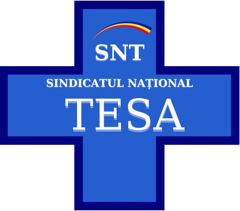
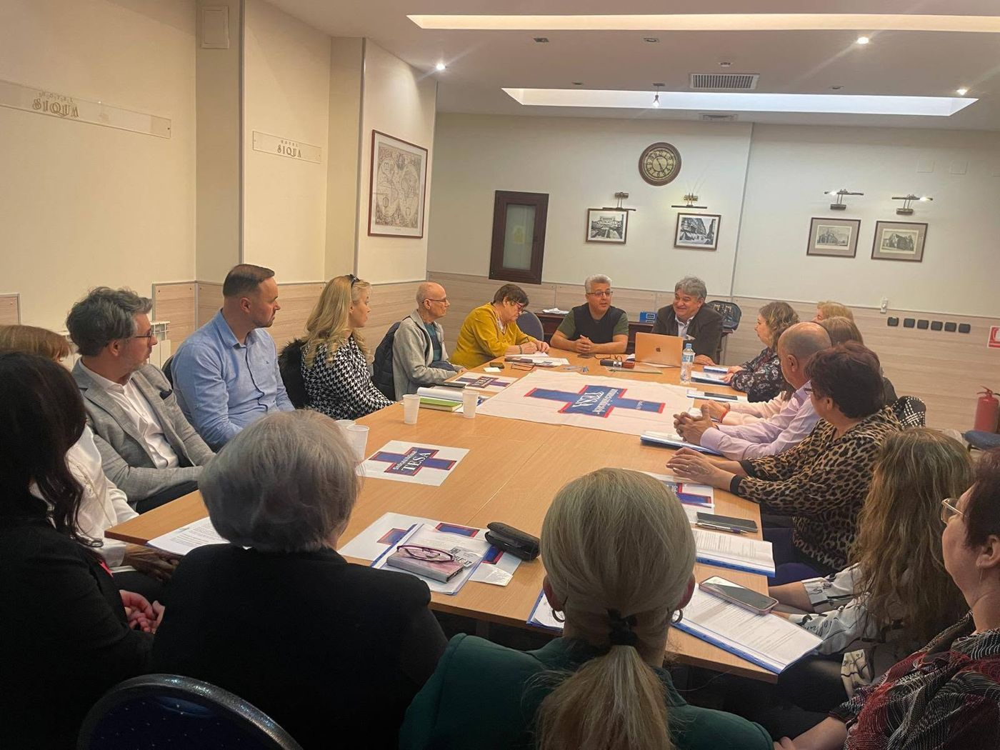
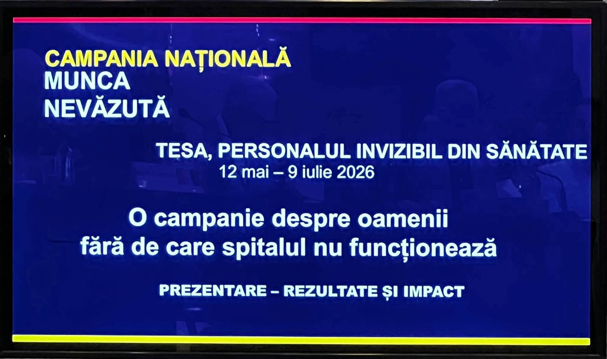
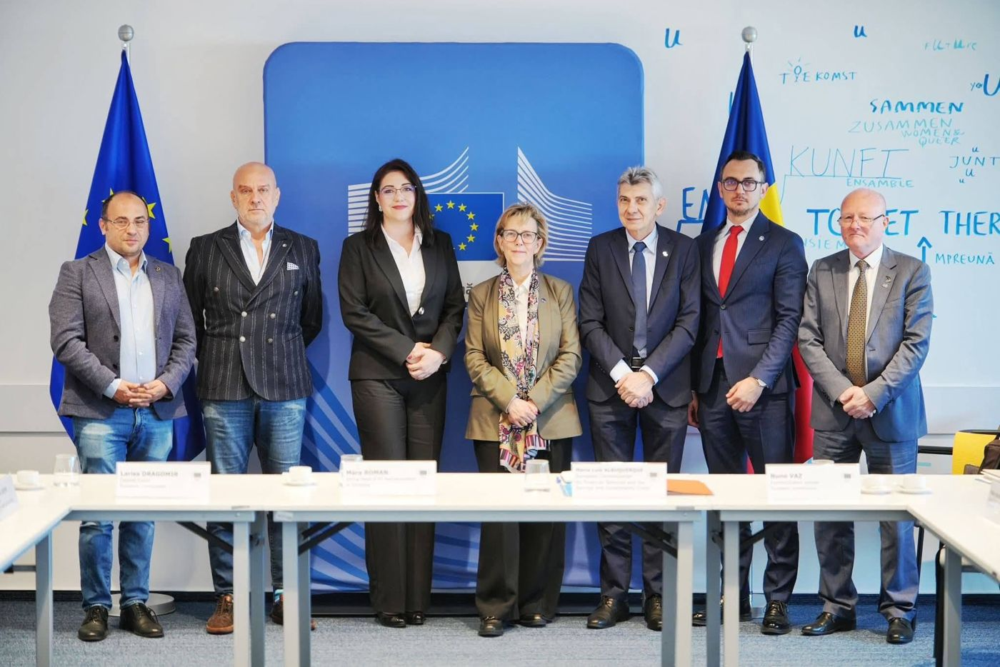
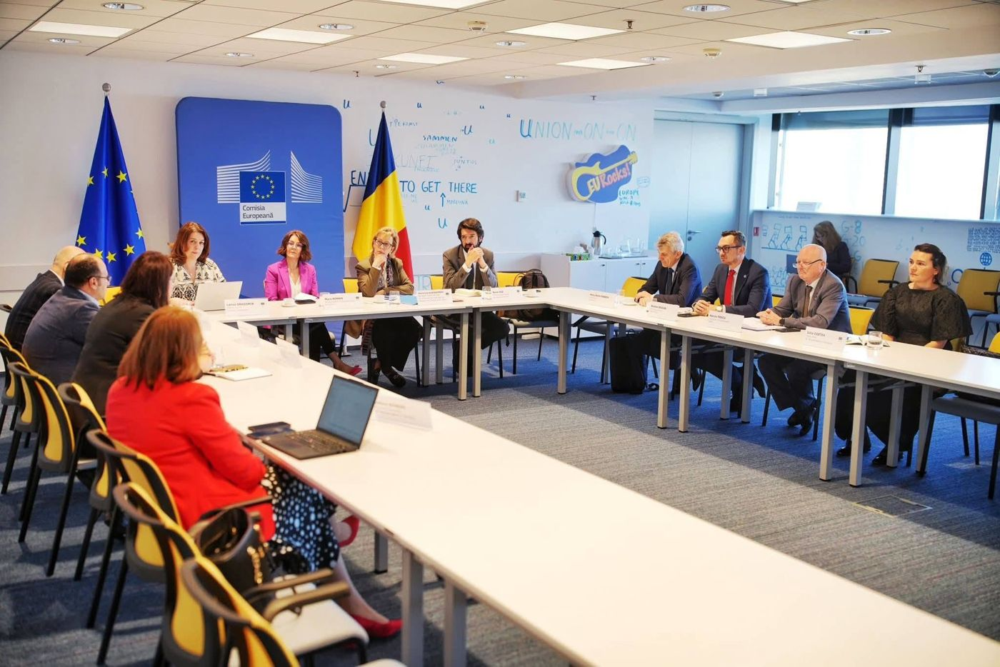
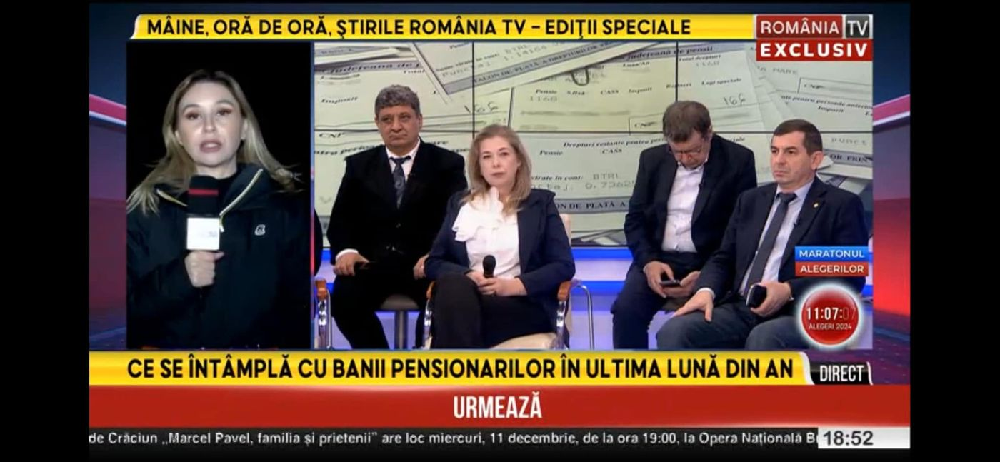
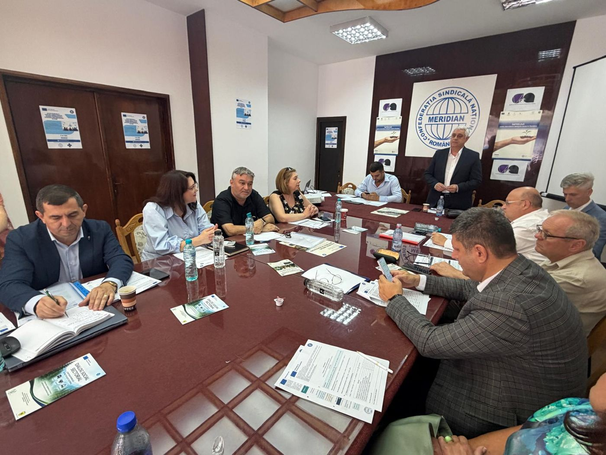
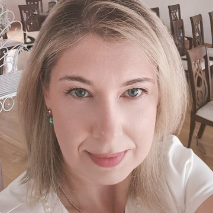
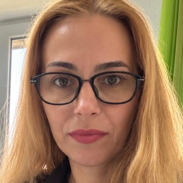
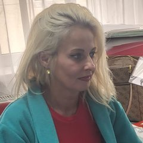

Intalnirea de infiintare a Sindicatului National TESA, 2024
Sindicatul National TESA reprezinta economistii, juristii, informaticienii, personalul administrativ si auxiliar din unitatile sanitare publice: colegii fara de care un spital nu poate functiona, dar care sunt prea des uitati in legile de salarizare.
Suntem afiliati la Uniunea Nationala a Sindicatelor TESA din Sanatate, singura federatie dedicata in totalitate personalului TESA din sanatate, si, prin intermediul ei, la Confederatia MERIDIAN. Prin federatie si confederatie, participam la dialogul social la nivel national.
Infiintat in 2024 · Presedinte: Chifor Valentin Liviu · Secretar general: Oana Toader · Sediul: Bucuresti, sector 6
Cauta-ti spitalul. Daca avem deja colegi acolo, nu esti singur.
Spitalul tau nu e inca pe lista?
Poti fi primul membru de acolo. Scrie-ne si iti spunem cum putem lucra impreuna.
Scrie-ne pe WhatsAppLucrezi in alt spital? Poti fi primul membru de acolo.
Analize, simulari si propuneri pentru legea salarizarii, sustinute in negocierile cu ministerele.
Consultanta si sprijin in conflicte de munca, sanctiuni disciplinare sau modificari ale contractului.
Problemele din spitalul tau ajung direct la ministere si la partide, prin Uniunea TESA si Confederatia MERIDIAN.
Participam la dialogul social national si european si invatam din practica altor tari, inclusiv prin proiecte cu finantare europeana.
Un angajat singur negociaza greu. O comunitate organizata are acces la informatie, la sprijin juridic si la masa negocierilor.
Personalul TESA a fost mult timp „munca nevazuta” a spitalelor. Am pornit de la un lucru simplu: nimeni nu tine un spital in functiune singur. De aici a inceput drumul nostru, din spital in spital si pana la masa negocierilor cu ministerele.
Personalul TESA din spitalele publice trebuie salarizat potrivit Anexei VII, asa cum a confirmat si Inalta Curte (Decizia nr. 61/2022). Am obtinut acest lucru in aproape toate spitalele unde avem membri.
Citeste povesteaAm negociat cu ministerele si cu partidele ca personalul TESA din spitale sa aiba locul stabilit clar in proiectul noii legi a salarizarii, chiar in capitolul dedicat sanatatii.
Citeste povesteaDoua luni in care am aratat tarii oamenii fara de care spitalul nu functioneaza: economisti, juristi, informaticieni, administratie si personal de suport.
Citeste povesteaSapte repere care spun cine suntem, de la anexa VII in spitale pana la negocierile pentru noua lege a salarizarii.
{{p.text}}





Alege alt reper din harta pentru a citi continuarea.
Am venit in sindicat cu o intrebare pe care si-o pun multi colegi: de ce munca noastra, a celor care tinem spitalul in functiune din birouri, pare sa conteze mai putin atunci cand vine vorba de salarizare?
Am gasit aici mai mult decat un raspuns. Am gasit oameni competenti, care au studiat legi, decizii ale Inaltei Curti si hotarari judecatoresti pana au identificat cele mai bune solutii pentru personalul TESA, si care au avut apoi rabdarea si tenacitatea sa le duca pana la capat.
Am gasit sprijin, raspunsuri clare si colegi pe care ma pot baza. Aici mi-am gasit locul.

Oana ToaderEconomist, Spitalul Municipal Campina · Secretar general SNTCa jurist, am vazut de prea multe ori cum o lege neclara devine o nedreptate pentru oamenii care isi fac treaba cu seriozitate. Personalul TESA din spitale a fost tratat diferit, desi munca lui sustine in fiecare zi actul medical, iar instantele au confirmat asta in repetate randuri.
Am venit alaturi de colegii TESA pentru ca dreptatea nu se obtine doar in sala de judecata, ci si scriind legi corecte. Amendamentul nostru la noua lege a salarizarii inseamna exact asta: argumente juridice solide, puse in slujba oamenilor.

Laura JeculescuJurist · Vicepresedinte SNTIn resurse umane vezi de aproape ce inseamna o incadrare gresita: oameni care muncesc la fel de mult, dar sunt platiti dupa o grila care nu li se potriveste. Legea 153/2017 permite incadrarea corecta a personalului TESA din spitale pe Anexa VII, art. 1 si 3, daca este citita atent si aplicata cu buna-credinta.
Am ales sa fiu alaturi de colegi pentru ca fiecare reincadrare corecta inseamna un om care isi primeste, in sfarsit, ce i se cuvine. Pentru mine, asta este cea mai frumoasa parte a meseriei.
La Marghita, departe de locul unde se iau deciziile, aveam impresia ca vocea noastra nu ajunge nicaieri. In Sindicatul National TESA am gasit oameni care cunosc legea, care explica pe intelesul tuturor si care nu fac diferenta intre un spital mare si unul mic.
Am venit cu incredere si am ramas cu convingerea ca, impreuna, avem o sansa reala sa fim auziti.

Natalia ChisMembru SNT · Spitalul Municipal „Dr. Pop Mircea” MarghitaAm pornit campania „Munca nevazuta” dintr-o convingere simpla: ce nu se vede, nu se pretuieste. Ani la rand, munca noastra din spitale a fost tratata ca un detaliu administrativ, desi fara ea niciun pacient nu ar putea fi internat, tratat sau externat.
Lupta pentru drepturile angajatilor nu se incheie cu o lege sau cu o campanie. Se duce zi de zi, cu rabdare si cu oameni care nu renunta. In Sindicatul National TESA am gasit exact acesti oameni.
Trei intrebari simple. Raspunsurile raman doar in browserul tau.
1. Lucrezi intr-un spital public sau in alta unitate sanitara publica?
2. Ocupi o functie TESA? (economist, contabil, jurist, informatician, referent, inspector, administrator, personal administrativ)
3. Esti salarizat potrivit Anexei VII?
Ne adresam personalului TESA din unitatile sanitare publice.
Daca totusi ai o problema legata de salarizare in sistemul sanitar, scrie-ne si iti spunem daca te putem ajuta.
Scrie-neEsti incadrat pe Anexa VII. Acum trebuie pastrata.
Noua lege a salarizarii decide si pentru tine. Pozitia castigata pentru personalul TESA se apara la masa negocierilor, iar acolo conteaza cati suntem.
Devino membruS-ar putea sa ai dreptul la incadrarea pe Anexa VII.
Potrivit Deciziei ICCJ nr. 61/2022, personalul TESA din spitalele publice se salarizeaza potrivit Anexei VII. Membrii nostri primesc Kitul Anexa VII: modelul de nota de fundamentare, pasii de urmat si un coleg care ii indruma.
Nu stii pe ce anexa esti platit? Nu esti singurul.
Uita-te in decizia de incadrare sau intreaba la serviciul de resurse umane. Sau scrie-ne si verificam impreuna.
Verificam impreunaDreptul tau e scris in lege si confirmat de Inalta Curte. Ca sa-l obtii, ai nevoie de pasii corecti si de cineva alaturi. Membrii nostri primesc:
Descarca formularul de adeziune din sectiunea Documente.
Prin cerere iti exprimi acordul cu Statutul si cu retinerea cotizatiei pe statul de plata.
Personal, liderului de sindicat din unitate, sau pe email la nationaltesa@gmail.com.
Cotizatia este de 0,5% din salariul brut si se retine direct pe statul de plata, fara drumuri si fara plati separate.
Datele din cerere sunt prelucrate exclusiv in scopul evidentei membrilor, conform Politicii de confidentialitate.
Da. Cotizatia se retine direct pe statul de plata, cu acordul tau scris din cererea de adeziune, asa ca serviciul de salarizare afla ca esti membru. Angajatorul primeste doar datele necesare retinerii cotizatiei.
Nu ar trebui. Codul muncii interzice discriminarea salariatilor pe criteriul apartenentei ori activitatii sindicale, iar Legea nr. 367/2022 a dialogului social protejeaza dreptul de a face parte dintr-un sindicat. Daca te confrunti totusi cu o astfel de situatie, anunta-ne.
Potrivit legii, o persoana poate fi membra, in acelasi timp, a unui singur sindicat la acelasi angajator. De aceea, cererea de adeziune cuprinde declaratia ca nu esti membru al altui sindicat. Daca vrei sa treci la noi, te retragi mai intai din sindicatul actual.
Cotizatia este de 0,5% din salariul brut, retinuta lunar pe statul de plata. La un salariu brut de 6.000 lei, inseamna 30 lei pe luna.
Da. Nimeni nu poate fi obligat sa ramana membru al unui sindicat. Te poti retrage oricand, printr-o cerere scrisa adresata sindicatului, conform Statutului.
Anexa VII este grila de salarizare care, potrivit Deciziei ICCJ nr. 61/2022, se aplica personalului TESA din spitalele publice. In practica, multe spitale nu au aplicat-o. Daca nu stii pe ce anexa esti platit sau ti s-a refuzat incadrarea, scrie-ne si te indrumam.
Scrie-ne un mesaj scurt si un coleg din sindicat te contacteaza ca sa discutati despre inscriere, despre incadrarea ta salariala sau despre o problema de la locul de munca.
Ai o problema la locul de munca? Scrie-ne sau suna-ne.